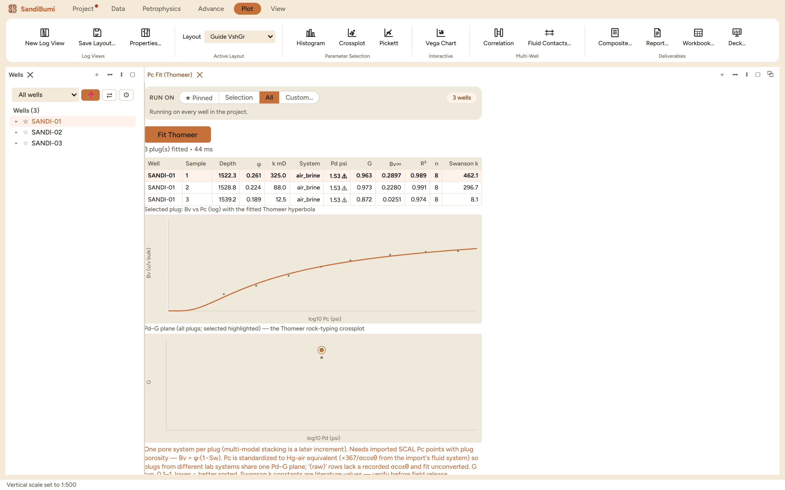

The Pc Fit pane fits Thomeer's log-hyperbola to laboratory capillary
pressure curves, plug by plug: entry pressure Pd, the pore-geometrical
factor G, and the asymptotic bulk volume Bv∞, plus a Swanson
permeability estimate from the fitted curve. Reach for it when a SCAL
delivery arrives and the study needs each plug's Pc curve reduced to
comparable parameters: rock typing on the Pd–G plane, or a
capillary-pressure model to stand behind a saturation-height law.
The pane

Three plugs from the active SCAL set: G
0.87–0.97, R² 0.97–0.99 on 8 points each, and the
entry pressure flagged on every plug.
The data comes from the active SCAL delivery (the same
set-resolution rule every reader follows); each plug's points are
Bv = φ·(1−Sw) against Pc.
Lab systems are standardized before comparison. The footer
states the contract: Pc converts to Hg-air equivalent from the
import's recorded fluid system so plugs from different labs share one
Pd–G plane, and "(raw)" rows with no recorded
σcosθ fit unconverted rather than silently wrong.
One pore system per plug, stated up front; a bimodal
carbonate curve needs the multi-modal treatment this pane does not yet
claim to have.
Step by step
Import the SCAL delivery (Data ▸ Import SCAL…), then
open the pane (workspace ＋ menu ▸ Pc Fit) and press
Fit Thomeer.
Click a table row to see that plug's points with the fitted
hyperbola; read R² and n (points per curve) before trusting any
parameter.
Read the Pd–G plane last: plugs that group there share pore
geometry, which is what a capillary rock type is.
Reading the result
On the example plugs the hyperbolae fit tightly (R² ≥ 0.97) and
G falls 0.87–0.97, but every Pd carries a warning flag: the fitted
entry pressure (1.53 psi) sits at the first measured pressure point, so
the true Pd is only known to be at or below it. A fit parameter pinned at
the data's edge is reported with the flag rather than quoted as a
measurement. The Swanson permeabilities (8–462 mD against measured
12.5–325 mD) land within a factor of a few, which is what that
correlation promises; the footer's caution that the Swanson constants are
literature values to verify before field release is the provenance rule
applied to a shipped default.
QC and pitfalls
A flagged Pd is a bound, not a value. If entry pressure
matters (thin transition zones, seal capacity), the lab needs to have
measured lower pressures; no fit recovers what was never
sampled.
Eight points fit a three-parameter curve comfortably but not
redundantly. R² on n=8 flatters; look at where the points sit
on the hyperbola, especially near the plateau.
Compare plugs only after conversion. An air-brine and an
Hg-air curve on one Pd axis differ by an order of magnitude until the
σcosθ standardization is applied; the "(raw)" marker
exists so that an unconverted plug can never masquerade as a
converted one.